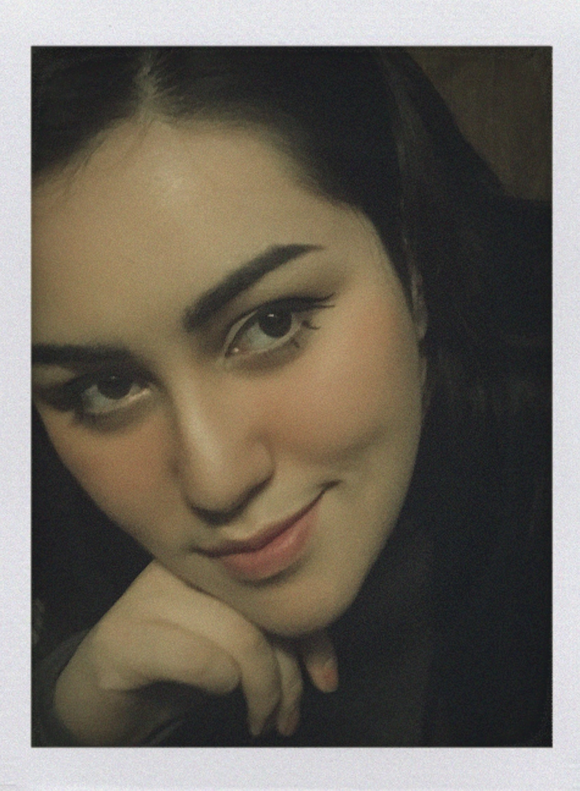

About me.
Hi, I'm Tina Rojas. With a passion for creativity and a desire for learning new skills, I found my way into front-end development. I am learning how to harness my design background and technical aptitude to craft unique yet user-friendly web experiences. I am constantly inspired and challenged by my peers and mentors who push me to the next level. Eager to embrace this new chapter, I am committed to continuous learning and contributing to the ever-evolving world of web development.